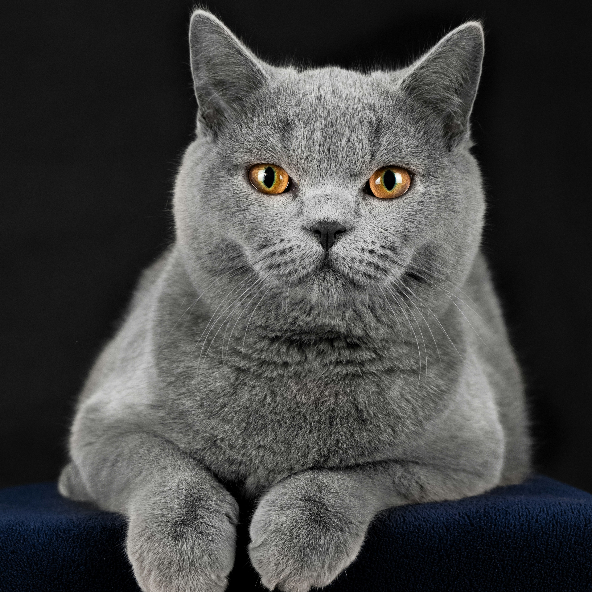

Breeds to Adopt
Shorthair
Photo by Lukáś Parničan on Unsplash.
There are two types of shorthair cats; American Shorthair, and British Shorthair, and are both very common in households. They are also commonly seen with tabby markings and a wide variation in colour options, yet are still their own individual breeds. Here is a small list of their differences:
American Shorthair:- Slimmer frame and a shorter coat, but are still a medium sized breed.
- More outgoing and playful, but can still be left alone, making them good for busy owners.
- Due to their high energy, they like to spend time hunting small pests in homes.
- A thicker build and coat, making them bigger.
- Laidback and requires less exercise, also making them good for busy owners.
- Because of their calmer nature, they are better with kids.
Siamese
Photo by Vivian Arcidiacono on Unsplash.
Siamese cats are known for their short fur's colours and patterns, which are mainly light, with concentrated dark points on their face, tails and feet. They are always seen with light blue eyes, adding to their elegance.
Most Siamese cats are seen in pale, offwhites as their main colour, with browns or blacks as their points. They may also have tabby stripes sometimes, most commonly appearing on their legs, tails, and faces.
Ragdoll
Photo by Kanashi on Unsplash.
Ragdoll cats are known mainly for their large amount of fur, and how long it is. This makes them a little bit of a nightmare to remove their hair from everywhere they walk, but also makes them very fun to cuddle. Brushing them regularly can help reduce this hassle. They come in many different colours, and mostly have similar markings to Siamese cats, points of darker fur on their faces, tails, and sometimes paws.
They are a generally low-energy breed, meaning they are more prone to obesity in their older years, which means their diets need to be looked after more as they grow and become less playful.
Sphynx

Photo by Dan Wayman on Unsplash
Sphynx cats are one of the very few breeds of cat that are completely hairless. Many people either love or hate the wrinkly look, so if the aesthetic is not something you enjoy, considering another breed is a good idea. Due to the fact that they have no fur, they are better with owners who have allergies. Also because of their lack of fur, they can cuddle up to their owners to make up for the loss of heat from having no coat.
A downside of having a Siamese cat for busy owners is that they are very needy when it comes to getting attention. Without a fellow pet that they like, they may misbehave in order to get the attention they want, which could lead to scratching. If you have a high work-load, this breed may not be for you.
Bombay
Photo by Ana Vieira on Unsplash.
Bombay cats are black with beautiful yellow eyes. Their short hairs may get lost around the house due to their dark colouration, but they will also not shed as frequently as long haired breeds, making it more manageable.
Similarly to the Siamese, Bombay cats require attention and love from their owners constantly. Leaving them alone for long periods of time will make them upset, so all-day workers, Bombay should probably not be your first choice.